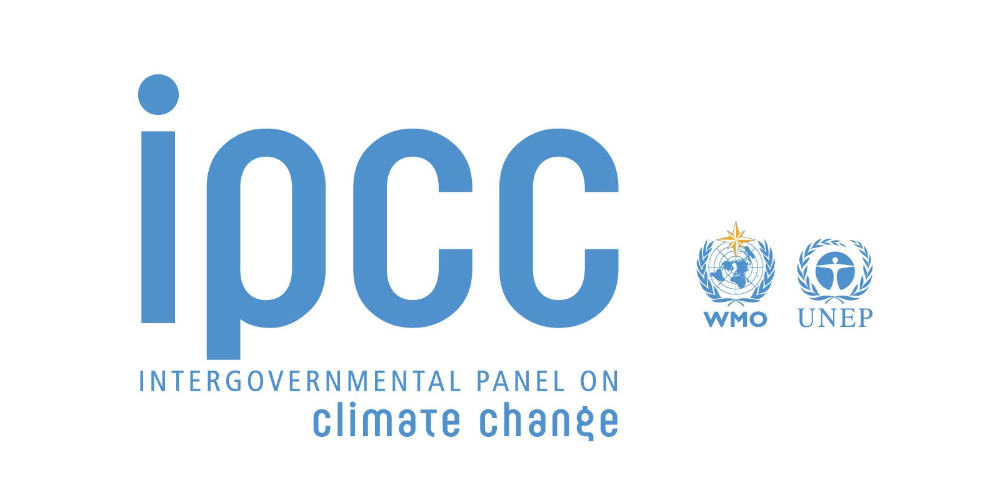
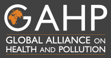
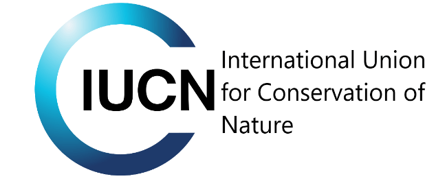

Intergovernmental Panel on Climate Change
The Intergovernmental Panel on Climate Change (IPCC) is an intergovernmental body of the United Nations. Its job is to advance scientific knowledge about climate change caused by human activities. The World Meteorological Organization (WMO) and the United Nations Environment Programme (UNEP) established the IPCC in 1988.
Global Alliance on Health and Pollution
GAHP (Global Alliance on Health and Pollution) is a network of international and national level agencies committed to a collaborative, multi-sectoral approach to address the global pollution crisis and the resulting health and economic impacts. GAHP’s overall goal is to reduce death and illness caused by all forms of toxic pollution, including air, water, soil and chemical wastes especially in low and middle-income countries.
International Union for Conservation of Nature
The International Union for Conservation of Nature (IUCN) is an international organization working in the field of nature conservation and sustainable use of natural resources. It is involved in data gathering and analysis, research, field projects, advocacy, and education. IUCN's mission is to "influence, encourage and assist societies throughout the world to conserve nature and to ensure that any use of natural resources is equitable and ecologically sustainable".
